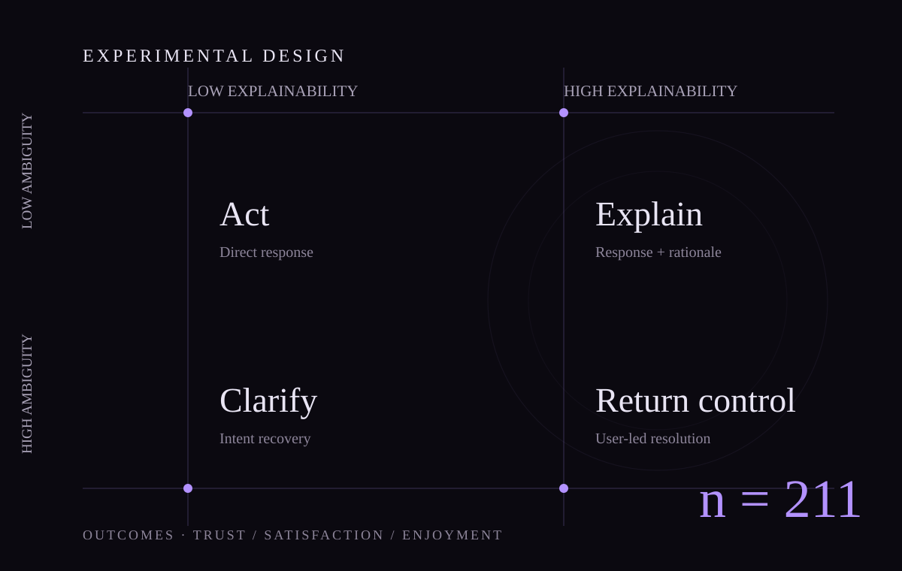

Empirical HCI study · First-author manuscript
Explainable Responses under Ambiguous Intent
A scenario-based experiment examining whether response explainability can mitigate the negative effects of ambiguous user requests in LLM-based smart home interaction.
- Design
- 2 × 2 between-subjects
- Sample
- 211 valid participants
- Outcomes
- Trust, satisfaction, and enjoyment
- Status
- Revised after second-round peer review

Research question
When a user request is ambiguous, can a more explainable response preserve trust and experience even when the system cannot fully resolve the intent?
Study design
Participants were assigned to one of four smart-home interaction scenarios formed by crossing request ambiguity and response explainability. The study measured how participants evaluated the assistant after observing the interaction.
Key finding
Under low explainability, greater request ambiguity reduced users’ evaluations. Enhanced response explanations mitigated these adverse effects across trust, satisfaction, and enjoyment.
Contribution
The study connects uncertainty in user input with response design. It suggests that explainability can serve as an interaction resource when a system is uncertain about what the user intended.
Output
When user requests are ambiguous: The role of response explainability in shaping user experience with LLM-based smart home assistants. First-author manuscript under review at the International Journal of Human-Computer Interaction.